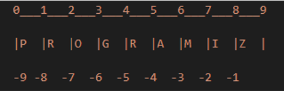

Module code.builtin_types.list_samples
Module list_samples.py
Remarks
Lists are mutable sequences, typically used to store collections of homogeneous items (where the precise degree of similarity will vary by application).
You can create lists in a number of ways:
- Using a pair of square brackets to denote the empty list:
[] - Using square brackets, separating items with commas:
[a],[a, b, c] - Using a list comprehension:
[x for x in iterable] - Using the type constructor:
list()orlist(iterable)
For more information, see lists and more on lists. See also Python Lists.
Expand source code
"""
Module list_samples.py
Remarks
-------
Lists are mutable sequences, typically used to store collections of homogeneous
items (where the precise degree of similarity will vary by application).
You can create lists in a number of ways:
- Using a pair of square brackets to denote the empty list: `[]`
- Using square brackets, separating items with commas: `[a]`, `[a, b, c]`
- Using a list comprehension: `[x for x in iterable]`
- Using the type constructor: `list()` or `list(iterable)`
For more information, see
[lists](https://docs.python.org/3/library/stdtypes.html#lists) and [more on
lists](https://docs.python.org/3/tutorial/datastructures.html?highlight=comprehension#more-on-lists). See also [Python Lists](https://www.w3schools.com/python/python_lists.asp).
"""
from typing import OrderedDict
from pprint import pprint
class ListSamples:
"""
Examples showing the use of lists.
Remarks
-------
A list can be written as a sequence of comma-separated values (items)
between square brackets. Lists might contain items of different types, but
usually they are all of the same type. For more information, see
[List](https://docs.python.org/3/library/stdtypes.html#lists).
"""
def __init__(self):
""" Initialize the class `list_samples` instance. """
# Define a list.
self.letters = ["a", "b", "c", "d", "e", "f", "g", "h", "i", "j"]
# Define a list with duplicated elements.
self.letters_duplicated = ["a", "b", "b", "d", "d", "f", "g", "h", "h", "j", "j"]
def _slice_list_range(self, lower_bound: int, upper_bound: int):
"""
Slice the items of a list in the specified range.
Parameters:
lower_bound(int):
The index of the first element in the range.
upper_bound(int):
The index of the last element in the range.
Remarks
-------
The list slicing syntax is upper-bound exclusive. For example, if you
want to include the element whose index is 5, you need to pass 6 as the
upper bound.
"""
try:
# Positive range.
range_items = str(self.letters[lower_bound:upper_bound+1])
print(f"The items in the range {lower_bound, upper_bound} are: {range_items}")
# Negative range.
# Invert the upper with lower bound an make them negative.
range_items = str(self.letters[-upper_bound:-lower_bound])
print(f"The items in the range {-upper_bound,-lower_bound} are: {range_items}")
except Exception as error:
print(f"{type(error).__name__} was raised: {error}")
def _slice_list_range_in_steps(self, lower_bound: int,
upper_bound: int, step: int):
"""
Slice the items of a list in the specified range, using the specified
step.
Parameters:
lower_bound(int):
The index of the first element in the range.
upper_bound(int):
The index of the last element in the range.
step(int):
The step to use when returning the elements. For example, if the
step is 2 every other item in the range is returned.
Remarks
-------
The complete syntax of list slicing is [start:end:step] . When you don't
pass a step, Python assumes the step is 1. [:] itself means to get
everything from start to end. So, [::2] means get everything from start
to end at a step of two.
"""
# Display the elements in the requested range with the specified step.
try:
range_items = str(self.letters[lower_bound:upper_bound:step])
print(f"The items in the range {lower_bound, upper_bound} with step {step} are: {range_items}")
except Exception as error:
print(f"{type(error).__name__} was raised: {error}")
def slice_list(self, lower_bound: int, upper_bound: int, step: int):
"""
Perform list slicing.
Remarks
-------
Slicing can be best visualized by considering the index to be between
the elements as shown below.

So if we want to access a range, we need two index that will slice that
portion from the list.
"""
try:
# Define the list.
print(f"The list to slice is: {self.letters}")
# Select elements 3rd to 5th.
print(f"\nSelect 3rd to 5th element: {self.letters[2:5]}")
# Select elements beginning at the 4th.
print(f"Select 1st to 4th element: {self.letters[:-5]}")
# Select elements from the 6th to the end.
print(f"Select 3rd to 5th element: {self.letters[5:]}")
# Slice the items in the specified range.
self._slice_list_range(lower_bound, upper_bound)
# Slice the items in the specified range and step.
self._slice_list_range_in_steps(lower_bound, upper_bound, step)
except Exception as error:
print(f"{type(error).__name__} was raised: {error}")
def _create_number_list_in_range(self, arange: range):
"""
Create a list of numbers in the specified range.
Parameters:
arange(range):
The range to create the number list.
Remarks
-------
This example accepts a Python range object, as a parameter. To get the
list object, the example uses the Pythonthe list comprehension construct
to convert the range object into a list object. For more information,
see [list
comprehension](https://realpython.com/list-comprehension-python/).
"""
try:
# Create a list of numbers in the specified range.
my_list = [n for n in arange]
print(f"The number list in the {arange} is:")
print(my_list)
except Exception as error:
# Display the error.
print(f"{type(error).__name__} was raised: {error}")
def _create_string_list_in_range(self, arange: range):
"""
Create a list of strings in the specified range.
Parameters:
arange(range):
The range to create the number list.
Remarks
-------
This example accepts a Python range object, as a parameter. To get the
list object, the example uses the Python built-in function 'map()` to
transform each mumber in the iteratable object `arange` in a string and
then appliese the function `list()` to convert the output into a list
object containing strings.
For more information, see [map
function](https://www.w3schools.com/python/ref_func_map.asp).
"""
try:
# Create a list of numbers in the specified range.
my_list = list(map(str, arange))
# my_list = [str(10 * n) for n in arange]
print(f"The string list in the {arange} is:")
print(my_list)
except Exception as error:
# Display the error.
print(f"{type(error).__name__} was raised: {error}")
def create_list(self, first_number: int, last_number: int):
"""
Create a list in the specified number range.
Parameters:
first_number(int):
The value of the first number in the list.
last_number(int):
The value of the last number in the list.
Remarks
-------
This example uses the Python built-in function `range()` that generates
a range of integers. However, `range()` creates a Python range object.
To get the list object, the example uses the `list()` function to
convert the range object into a list object.
"""
try:
# Get the range object.
arange = range(first_number, last_number)
# Get the related list.
print(f"Create a list in the range: ({first_number}, {last_number}) :")
my_list = list(arange)
print(f"Using the 'range()` function the list is:' {my_list}")
print(f"The list length is: {len(my_list)}")
print(f"The indices of the first and last items are: {my_list.index(first_number), my_list.index(last_number-1)}")
# Get the range object.
first_number = first_number + 10
last_number = last_number + 10
new_range = range(first_number, last_number)
print(f"\nUsing {new_range} parameter.")
self._create_number_list_in_range(new_range)
self._create_string_list_in_range(new_range)
except Exception as error:
# Display the error.
print(f"{type(error).__name__} was raised: {error}")
def remove_duplicated_list_elements(self):
"""
Remove duplicated elments in a lists.
Parameters
----------
arange : range
The range to create the number list.
Remarks
-------
To remove deplicated elements in a list, you can use one of the
following approaches: 1. Use the `set` function to convert the list to
a set that would remove all duplicates because `set` objects cannot
contain duplicates. Then use the `list` function to convert the set
back to a list. The drawback here is that the original order of the
items is lost.
For more information, see [set
function](https://www.w3schools.com/python/ref_func_set.asp).
"""
try:
# Method 1: using set.
my_set = set(self.letters_duplicated)
my_list = list(my_set)
print(f"Using set function. The unordered list is: {my_list}")
my_dictionary = OrderedDict.fromkeys(self.letters_duplicated)
my_list = list(my_dictionary)
print(f"Using OrderedDict.fromkeys function. The ordered list is: {my_list}")
except Exception as error:
# Display the error.
print(f"{type(error).__name__} was raised: {error}")
def index_list(self):
"""
Perform basic index operations.
"""
try:
# Define a list.
my_list = ['p', 'r', 'o', 'b', 'e']
print(f"The list is: {my_list}")
# At index 0 is : p
print("At index 0 is : " + my_list[0])
# At index 2 is : o
print("At index 2 is : " + my_list[2])
# At index 4 is : e
print("At index 4 is : " + my_list[4])
# Negative indexing The index -1 refers to the last element
# The index -5 refers to the first element (in this example)
# At index -1 is : e
print("At index -1 is : " + my_list[-1])
# At index -5 is : p
print("At index -5 is : " + my_list[-5])
# Create nested list
n_list = ["Happy", [2, 0, 1, 5]]
print(f"The nested list is: {n_list}")
# Nested indexing
# In the nested list at index 0,1 is : a
print("In the nested list at index 0, 1 is : " + n_list[0][1])
# In the nested list at index 1,3 is : 5
print("In the nested list at index 1,3 is : " + str((n_list[1][3])))
# Error! List indices must be integers or slices, not float.
element = my_list[4.0]
except Exception as error:
# Display the error.
print(f"{type(error).__name__} was raised: {error}")
def get_list_item(self, index:int):
"""
Display the item of a list at the specified index.
Parameters:
index : int
The index of the element to display.
Remarks
-------
Every item of a list is referenced with an index number starting from
zero and increasing by one.
Besides the left-to-right positive indexing that starts from zero, list
data types such as lists also have a second indexing system that starts
from -1 and decreases by one from right-to-left.
"""
# Display the requested item.
try:
print(f"The list is: {self.letters}")
# Get the item at the specified index.
item = self.letters[index]
print(f"The item at index {index} is: {item}")
# Get the item at the specified negative index.
item = self.letters[-index]
print(f"The item at index {-index} is: {item}")
except Exception as error:
print(f"{type(error).__name__} was raised: {index} {error}")
def change_list_element(self):
"""
Change element in a list.
Remarks
-------
Lists are mutable objects, meaning that their elements can be changed
programmatically at run time, unlike a string or a tuple.
"""
try:
# Define a list
my_list = [2, 4, 6, 8]
print(f"The list is: {my_list}")
# Change the first item
my_list[0] = 1
print(f"Change first item of the list: {my_list}")
# Change 2nd to 4th items
my_list[1:4] = [3, 5, 7]
print(f"Change 2nd to 4th items: {my_list}")
except Exception as error:
print(f"{type(error).__name__} was raised: {error}")
def add_list_element(self):
"""
Add element to a list.
"""
try:
# Define a list
my_list = [1, 3, 5]
print(f"The list is: {my_list}")
# Add an element to the list
my_list.append(7)
print(f"Added one item to the list: {my_list[:]}")
# Add several elements to the list
my_list.extend([9, 11, 13])
print(f"Added several elements to the list: {my_list[:]}")
except Exception as error:
print(f"{type(error).__name__} was raised: {error}")
def apply_list_methods(self):
"""
Apply most common list methods.
Remarks
-------
For more info, see [more on
lists](https://docs.python.org/3/tutorial/datastructures.html?highlight=comprehension#more-on-lists).
"""
try:
# Define a list
fruits = ['orange', 'apple', 'pear', 'banana', 'kiwi', 'apple', 'banana']
print("The list is:")
print(fruits)
print(f"Apple element count: {fruits.count('apple')}")
print(f"Tangerine element count: {fruits.count('tangerine')}")
print(f"Banana element index: {fruits.index('banana')}")
print(f"Find next banana element starting at position 4: {fruits.index('banana', 4)}")
print("\"fruits.reverse()\" reverses the elements of the list in place.")
fruits.reverse()
print(fruits)
print("\"fruits.append('grape')\" append grape to the list.")
fruits.append('grape')
print(fruits)
fruits.sort()
print(f"Sorted list: {fruits}")
element = fruits.pop()
print(f"Pop last element from the list: {element}")
except Exception as error:
print(f"{type(error).__name__} was raised: {error}")
def use_list_as_stack(self):
"""
Use a list as a stack (LIFO).
Remarks
-------
The list methods make it very easy to use a list as a stack, where the
last element added is the first element retrieved (“last-in, first-out”
LIFO). To add an item to the top of the stack, use `append()`. To
retrieve an item from the top of the stack, use `pop()` without an
explicit index.
For more info, see [using lists as a
stack](https://docs.python.org/3/tutorial/datastructures.html?highlight=comprehension#using-lists-as-stacks).
"""
try:
stack = [3, 4, 5]
print(f"The stack is: {stack}")
stack.append(6)
print(f"Append an element to the stack: {stack}")
stack.append(7)
print(f"Append another element to the stack: {stack}")
print(f"Pop an element from the stack: {stack.pop()}")
print(f"Pop another element from the stack: {stack.pop()}")
print(f"Final stack: {stack}")
except Exception as error:
print(f"{type(error).__name__} was raised: {error}")
def use_list_as_queue(self):
"""
Use a list as a queue (FIFO).
Remarks
-------
The list methods make it very easy to use a list as a queue, where the
first element added is the first element retrieved (“first-in,
first-out” FIFO). However, lists are not efficient for this purpose.
While appends and pops from the end of list are fast, doing inserts or
pops from the beginning of a list is slow (because all of the other
elements have to be shifted by one).
For more info, see [using lists as a
queue](https://docs.python.org/3/tutorial/datastructures.html?highlight=comprehension#using-lists-as-queues).
"""
from collections import deque
try:
queue = deque(["Eric", "John", "Michael"])
print(f"The queue is: {queue}")
queue.append("Terry")
print(f"Terry arrives: {queue}")
queue.append("Graham")
print(f"Graham arrives: {queue}")
left = queue.popleft()
print(f"{left} the first to arrive now leaves.")
left = queue.popleft()
print(f"{left} the second to arrive now leaves.")
queue = deque(['Michael', 'Terry', 'Graham'])
print(f"Remaining queue in order of arrival: {queue}")
except Exception as error:
print(f"{type(error).__name__} was raised: {error}")
def use_list_comprehension (self):
"""
Use list comprehension.
Remarks
-------
List comprehensions provide a concise way to create lists. Common
applications are to make new lists where each element is the result of
some operations applied to each member of another sequence or iterable,
or to create a subsequence of those elements that satisfy a certain
condition.
"""
try:
# Create a list of squares.
self.squares = [x**2 for x in range(10)]
print(f"Create a list of squares")
print(self.squares)
except Exception as error:
print(f"{type(error).__name__} was raised: {error}") Classes
class ListSamples-
Examples showing the use of lists.
Remarks
A list can be written as a sequence of comma-separated values (items) between square brackets. Lists might contain items of different types, but usually they are all of the same type. For more information, see List.
Initialize the class
list_samplesinstance.Expand source code
class ListSamples: """ Examples showing the use of lists. Remarks ------- A list can be written as a sequence of comma-separated values (items) between square brackets. Lists might contain items of different types, but usually they are all of the same type. For more information, see [List](https://docs.python.org/3/library/stdtypes.html#lists). """ def __init__(self): """ Initialize the class `list_samples` instance. """ # Define a list. self.letters = ["a", "b", "c", "d", "e", "f", "g", "h", "i", "j"] # Define a list with duplicated elements. self.letters_duplicated = ["a", "b", "b", "d", "d", "f", "g", "h", "h", "j", "j"] def _slice_list_range(self, lower_bound: int, upper_bound: int): """ Slice the items of a list in the specified range. Parameters: lower_bound(int): The index of the first element in the range. upper_bound(int): The index of the last element in the range. Remarks ------- The list slicing syntax is upper-bound exclusive. For example, if you want to include the element whose index is 5, you need to pass 6 as the upper bound. """ try: # Positive range. range_items = str(self.letters[lower_bound:upper_bound+1]) print(f"The items in the range {lower_bound, upper_bound} are: {range_items}") # Negative range. # Invert the upper with lower bound an make them negative. range_items = str(self.letters[-upper_bound:-lower_bound]) print(f"The items in the range {-upper_bound,-lower_bound} are: {range_items}") except Exception as error: print(f"{type(error).__name__} was raised: {error}") def _slice_list_range_in_steps(self, lower_bound: int, upper_bound: int, step: int): """ Slice the items of a list in the specified range, using the specified step. Parameters: lower_bound(int): The index of the first element in the range. upper_bound(int): The index of the last element in the range. step(int): The step to use when returning the elements. For example, if the step is 2 every other item in the range is returned. Remarks ------- The complete syntax of list slicing is [start:end:step] . When you don't pass a step, Python assumes the step is 1. [:] itself means to get everything from start to end. So, [::2] means get everything from start to end at a step of two. """ # Display the elements in the requested range with the specified step. try: range_items = str(self.letters[lower_bound:upper_bound:step]) print(f"The items in the range {lower_bound, upper_bound} with step {step} are: {range_items}") except Exception as error: print(f"{type(error).__name__} was raised: {error}") def slice_list(self, lower_bound: int, upper_bound: int, step: int): """ Perform list slicing. Remarks ------- Slicing can be best visualized by considering the index to be between the elements as shown below.  So if we want to access a range, we need two index that will slice that portion from the list. """ try: # Define the list. print(f"The list to slice is: {self.letters}") # Select elements 3rd to 5th. print(f"\nSelect 3rd to 5th element: {self.letters[2:5]}") # Select elements beginning at the 4th. print(f"Select 1st to 4th element: {self.letters[:-5]}") # Select elements from the 6th to the end. print(f"Select 3rd to 5th element: {self.letters[5:]}") # Slice the items in the specified range. self._slice_list_range(lower_bound, upper_bound) # Slice the items in the specified range and step. self._slice_list_range_in_steps(lower_bound, upper_bound, step) except Exception as error: print(f"{type(error).__name__} was raised: {error}") def _create_number_list_in_range(self, arange: range): """ Create a list of numbers in the specified range. Parameters: arange(range): The range to create the number list. Remarks ------- This example accepts a Python range object, as a parameter. To get the list object, the example uses the Pythonthe list comprehension construct to convert the range object into a list object. For more information, see [list comprehension](https://realpython.com/list-comprehension-python/). """ try: # Create a list of numbers in the specified range. my_list = [n for n in arange] print(f"The number list in the {arange} is:") print(my_list) except Exception as error: # Display the error. print(f"{type(error).__name__} was raised: {error}") def _create_string_list_in_range(self, arange: range): """ Create a list of strings in the specified range. Parameters: arange(range): The range to create the number list. Remarks ------- This example accepts a Python range object, as a parameter. To get the list object, the example uses the Python built-in function 'map()` to transform each mumber in the iteratable object `arange` in a string and then appliese the function `list()` to convert the output into a list object containing strings. For more information, see [map function](https://www.w3schools.com/python/ref_func_map.asp). """ try: # Create a list of numbers in the specified range. my_list = list(map(str, arange)) # my_list = [str(10 * n) for n in arange] print(f"The string list in the {arange} is:") print(my_list) except Exception as error: # Display the error. print(f"{type(error).__name__} was raised: {error}") def create_list(self, first_number: int, last_number: int): """ Create a list in the specified number range. Parameters: first_number(int): The value of the first number in the list. last_number(int): The value of the last number in the list. Remarks ------- This example uses the Python built-in function `range()` that generates a range of integers. However, `range()` creates a Python range object. To get the list object, the example uses the `list()` function to convert the range object into a list object. """ try: # Get the range object. arange = range(first_number, last_number) # Get the related list. print(f"Create a list in the range: ({first_number}, {last_number}) :") my_list = list(arange) print(f"Using the 'range()` function the list is:' {my_list}") print(f"The list length is: {len(my_list)}") print(f"The indices of the first and last items are: {my_list.index(first_number), my_list.index(last_number-1)}") # Get the range object. first_number = first_number + 10 last_number = last_number + 10 new_range = range(first_number, last_number) print(f"\nUsing {new_range} parameter.") self._create_number_list_in_range(new_range) self._create_string_list_in_range(new_range) except Exception as error: # Display the error. print(f"{type(error).__name__} was raised: {error}") def remove_duplicated_list_elements(self): """ Remove duplicated elments in a lists. Parameters ---------- arange : range The range to create the number list. Remarks ------- To remove deplicated elements in a list, you can use one of the following approaches: 1. Use the `set` function to convert the list to a set that would remove all duplicates because `set` objects cannot contain duplicates. Then use the `list` function to convert the set back to a list. The drawback here is that the original order of the items is lost. For more information, see [set function](https://www.w3schools.com/python/ref_func_set.asp). """ try: # Method 1: using set. my_set = set(self.letters_duplicated) my_list = list(my_set) print(f"Using set function. The unordered list is: {my_list}") my_dictionary = OrderedDict.fromkeys(self.letters_duplicated) my_list = list(my_dictionary) print(f"Using OrderedDict.fromkeys function. The ordered list is: {my_list}") except Exception as error: # Display the error. print(f"{type(error).__name__} was raised: {error}") def index_list(self): """ Perform basic index operations. """ try: # Define a list. my_list = ['p', 'r', 'o', 'b', 'e'] print(f"The list is: {my_list}") # At index 0 is : p print("At index 0 is : " + my_list[0]) # At index 2 is : o print("At index 2 is : " + my_list[2]) # At index 4 is : e print("At index 4 is : " + my_list[4]) # Negative indexing The index -1 refers to the last element # The index -5 refers to the first element (in this example) # At index -1 is : e print("At index -1 is : " + my_list[-1]) # At index -5 is : p print("At index -5 is : " + my_list[-5]) # Create nested list n_list = ["Happy", [2, 0, 1, 5]] print(f"The nested list is: {n_list}") # Nested indexing # In the nested list at index 0,1 is : a print("In the nested list at index 0, 1 is : " + n_list[0][1]) # In the nested list at index 1,3 is : 5 print("In the nested list at index 1,3 is : " + str((n_list[1][3]))) # Error! List indices must be integers or slices, not float. element = my_list[4.0] except Exception as error: # Display the error. print(f"{type(error).__name__} was raised: {error}") def get_list_item(self, index:int): """ Display the item of a list at the specified index. Parameters: index : int The index of the element to display. Remarks ------- Every item of a list is referenced with an index number starting from zero and increasing by one. Besides the left-to-right positive indexing that starts from zero, list data types such as lists also have a second indexing system that starts from -1 and decreases by one from right-to-left. """ # Display the requested item. try: print(f"The list is: {self.letters}") # Get the item at the specified index. item = self.letters[index] print(f"The item at index {index} is: {item}") # Get the item at the specified negative index. item = self.letters[-index] print(f"The item at index {-index} is: {item}") except Exception as error: print(f"{type(error).__name__} was raised: {index} {error}") def change_list_element(self): """ Change element in a list. Remarks ------- Lists are mutable objects, meaning that their elements can be changed programmatically at run time, unlike a string or a tuple. """ try: # Define a list my_list = [2, 4, 6, 8] print(f"The list is: {my_list}") # Change the first item my_list[0] = 1 print(f"Change first item of the list: {my_list}") # Change 2nd to 4th items my_list[1:4] = [3, 5, 7] print(f"Change 2nd to 4th items: {my_list}") except Exception as error: print(f"{type(error).__name__} was raised: {error}") def add_list_element(self): """ Add element to a list. """ try: # Define a list my_list = [1, 3, 5] print(f"The list is: {my_list}") # Add an element to the list my_list.append(7) print(f"Added one item to the list: {my_list[:]}") # Add several elements to the list my_list.extend([9, 11, 13]) print(f"Added several elements to the list: {my_list[:]}") except Exception as error: print(f"{type(error).__name__} was raised: {error}") def apply_list_methods(self): """ Apply most common list methods. Remarks ------- For more info, see [more on lists](https://docs.python.org/3/tutorial/datastructures.html?highlight=comprehension#more-on-lists). """ try: # Define a list fruits = ['orange', 'apple', 'pear', 'banana', 'kiwi', 'apple', 'banana'] print("The list is:") print(fruits) print(f"Apple element count: {fruits.count('apple')}") print(f"Tangerine element count: {fruits.count('tangerine')}") print(f"Banana element index: {fruits.index('banana')}") print(f"Find next banana element starting at position 4: {fruits.index('banana', 4)}") print("\"fruits.reverse()\" reverses the elements of the list in place.") fruits.reverse() print(fruits) print("\"fruits.append('grape')\" append grape to the list.") fruits.append('grape') print(fruits) fruits.sort() print(f"Sorted list: {fruits}") element = fruits.pop() print(f"Pop last element from the list: {element}") except Exception as error: print(f"{type(error).__name__} was raised: {error}") def use_list_as_stack(self): """ Use a list as a stack (LIFO). Remarks ------- The list methods make it very easy to use a list as a stack, where the last element added is the first element retrieved (“last-in, first-out” LIFO). To add an item to the top of the stack, use `append()`. To retrieve an item from the top of the stack, use `pop()` without an explicit index. For more info, see [using lists as a stack](https://docs.python.org/3/tutorial/datastructures.html?highlight=comprehension#using-lists-as-stacks). """ try: stack = [3, 4, 5] print(f"The stack is: {stack}") stack.append(6) print(f"Append an element to the stack: {stack}") stack.append(7) print(f"Append another element to the stack: {stack}") print(f"Pop an element from the stack: {stack.pop()}") print(f"Pop another element from the stack: {stack.pop()}") print(f"Final stack: {stack}") except Exception as error: print(f"{type(error).__name__} was raised: {error}") def use_list_as_queue(self): """ Use a list as a queue (FIFO). Remarks ------- The list methods make it very easy to use a list as a queue, where the first element added is the first element retrieved (“first-in, first-out” FIFO). However, lists are not efficient for this purpose. While appends and pops from the end of list are fast, doing inserts or pops from the beginning of a list is slow (because all of the other elements have to be shifted by one). For more info, see [using lists as a queue](https://docs.python.org/3/tutorial/datastructures.html?highlight=comprehension#using-lists-as-queues). """ from collections import deque try: queue = deque(["Eric", "John", "Michael"]) print(f"The queue is: {queue}") queue.append("Terry") print(f"Terry arrives: {queue}") queue.append("Graham") print(f"Graham arrives: {queue}") left = queue.popleft() print(f"{left} the first to arrive now leaves.") left = queue.popleft() print(f"{left} the second to arrive now leaves.") queue = deque(['Michael', 'Terry', 'Graham']) print(f"Remaining queue in order of arrival: {queue}") except Exception as error: print(f"{type(error).__name__} was raised: {error}") def use_list_comprehension (self): """ Use list comprehension. Remarks ------- List comprehensions provide a concise way to create lists. Common applications are to make new lists where each element is the result of some operations applied to each member of another sequence or iterable, or to create a subsequence of those elements that satisfy a certain condition. """ try: # Create a list of squares. self.squares = [x**2 for x in range(10)] print(f"Create a list of squares") print(self.squares) except Exception as error: print(f"{type(error).__name__} was raised: {error}")Methods
def add_list_element(self)-
Add element to a list.
Expand source code
def add_list_element(self): """ Add element to a list. """ try: # Define a list my_list = [1, 3, 5] print(f"The list is: {my_list}") # Add an element to the list my_list.append(7) print(f"Added one item to the list: {my_list[:]}") # Add several elements to the list my_list.extend([9, 11, 13]) print(f"Added several elements to the list: {my_list[:]}") except Exception as error: print(f"{type(error).__name__} was raised: {error}") def apply_list_methods(self)-
Expand source code
def apply_list_methods(self): """ Apply most common list methods. Remarks ------- For more info, see [more on lists](https://docs.python.org/3/tutorial/datastructures.html?highlight=comprehension#more-on-lists). """ try: # Define a list fruits = ['orange', 'apple', 'pear', 'banana', 'kiwi', 'apple', 'banana'] print("The list is:") print(fruits) print(f"Apple element count: {fruits.count('apple')}") print(f"Tangerine element count: {fruits.count('tangerine')}") print(f"Banana element index: {fruits.index('banana')}") print(f"Find next banana element starting at position 4: {fruits.index('banana', 4)}") print("\"fruits.reverse()\" reverses the elements of the list in place.") fruits.reverse() print(fruits) print("\"fruits.append('grape')\" append grape to the list.") fruits.append('grape') print(fruits) fruits.sort() print(f"Sorted list: {fruits}") element = fruits.pop() print(f"Pop last element from the list: {element}") except Exception as error: print(f"{type(error).__name__} was raised: {error}") def change_list_element(self)-
Change element in a list.
Remarks
Lists are mutable objects, meaning that their elements can be changed programmatically at run time, unlike a string or a tuple.
Expand source code
def change_list_element(self): """ Change element in a list. Remarks ------- Lists are mutable objects, meaning that their elements can be changed programmatically at run time, unlike a string or a tuple. """ try: # Define a list my_list = [2, 4, 6, 8] print(f"The list is: {my_list}") # Change the first item my_list[0] = 1 print(f"Change first item of the list: {my_list}") # Change 2nd to 4th items my_list[1:4] = [3, 5, 7] print(f"Change 2nd to 4th items: {my_list}") except Exception as error: print(f"{type(error).__name__} was raised: {error}") def create_list(self, first_number: int, last_number: int)-
Create a list in the specified number range.
Parameters
first_number(int): The value of the first number in the list. last_number(int): The value of the last number in the list.
Remarks
This example uses the Python built-in function
range()that generates a range of integers. However,range()creates a Python range object. To get the list object, the example uses thelist()function to convert the range object into a list object.Expand source code
def create_list(self, first_number: int, last_number: int): """ Create a list in the specified number range. Parameters: first_number(int): The value of the first number in the list. last_number(int): The value of the last number in the list. Remarks ------- This example uses the Python built-in function `range()` that generates a range of integers. However, `range()` creates a Python range object. To get the list object, the example uses the `list()` function to convert the range object into a list object. """ try: # Get the range object. arange = range(first_number, last_number) # Get the related list. print(f"Create a list in the range: ({first_number}, {last_number}) :") my_list = list(arange) print(f"Using the 'range()` function the list is:' {my_list}") print(f"The list length is: {len(my_list)}") print(f"The indices of the first and last items are: {my_list.index(first_number), my_list.index(last_number-1)}") # Get the range object. first_number = first_number + 10 last_number = last_number + 10 new_range = range(first_number, last_number) print(f"\nUsing {new_range} parameter.") self._create_number_list_in_range(new_range) self._create_string_list_in_range(new_range) except Exception as error: # Display the error. print(f"{type(error).__name__} was raised: {error}") def get_list_item(self, index: int)-
Display the item of a list at the specified index.
Parameters
index : int The index of the element to display.
Remarks
Every item of a list is referenced with an index number starting from zero and increasing by one.
Besides the left-to-right positive indexing that starts from zero, list data types such as lists also have a second indexing system that starts from -1 and decreases by one from right-to-left.
Expand source code
def get_list_item(self, index:int): """ Display the item of a list at the specified index. Parameters: index : int The index of the element to display. Remarks ------- Every item of a list is referenced with an index number starting from zero and increasing by one. Besides the left-to-right positive indexing that starts from zero, list data types such as lists also have a second indexing system that starts from -1 and decreases by one from right-to-left. """ # Display the requested item. try: print(f"The list is: {self.letters}") # Get the item at the specified index. item = self.letters[index] print(f"The item at index {index} is: {item}") # Get the item at the specified negative index. item = self.letters[-index] print(f"The item at index {-index} is: {item}") except Exception as error: print(f"{type(error).__name__} was raised: {index} {error}") def index_list(self)-
Perform basic index operations.
Expand source code
def index_list(self): """ Perform basic index operations. """ try: # Define a list. my_list = ['p', 'r', 'o', 'b', 'e'] print(f"The list is: {my_list}") # At index 0 is : p print("At index 0 is : " + my_list[0]) # At index 2 is : o print("At index 2 is : " + my_list[2]) # At index 4 is : e print("At index 4 is : " + my_list[4]) # Negative indexing The index -1 refers to the last element # The index -5 refers to the first element (in this example) # At index -1 is : e print("At index -1 is : " + my_list[-1]) # At index -5 is : p print("At index -5 is : " + my_list[-5]) # Create nested list n_list = ["Happy", [2, 0, 1, 5]] print(f"The nested list is: {n_list}") # Nested indexing # In the nested list at index 0,1 is : a print("In the nested list at index 0, 1 is : " + n_list[0][1]) # In the nested list at index 1,3 is : 5 print("In the nested list at index 1,3 is : " + str((n_list[1][3]))) # Error! List indices must be integers or slices, not float. element = my_list[4.0] except Exception as error: # Display the error. print(f"{type(error).__name__} was raised: {error}") def remove_duplicated_list_elements(self)-
Remove duplicated elments in a lists.
Parameters
arange:range- The range to create the number list.
Remarks
To remove deplicated elements in a list, you can use one of the following approaches: 1. Use the
setfunction to convert the list to a set that would remove all duplicates becausesetobjects cannot contain duplicates. Then use thelistfunction to convert the set back to a list. The drawback here is that the original order of the items is lost.For more information, see set function.
Expand source code
def remove_duplicated_list_elements(self): """ Remove duplicated elments in a lists. Parameters ---------- arange : range The range to create the number list. Remarks ------- To remove deplicated elements in a list, you can use one of the following approaches: 1. Use the `set` function to convert the list to a set that would remove all duplicates because `set` objects cannot contain duplicates. Then use the `list` function to convert the set back to a list. The drawback here is that the original order of the items is lost. For more information, see [set function](https://www.w3schools.com/python/ref_func_set.asp). """ try: # Method 1: using set. my_set = set(self.letters_duplicated) my_list = list(my_set) print(f"Using set function. The unordered list is: {my_list}") my_dictionary = OrderedDict.fromkeys(self.letters_duplicated) my_list = list(my_dictionary) print(f"Using OrderedDict.fromkeys function. The ordered list is: {my_list}") except Exception as error: # Display the error. print(f"{type(error).__name__} was raised: {error}") def slice_list(self, lower_bound: int, upper_bound: int, step: int)-
Perform list slicing.
Remarks
Slicing can be best visualized by considering the index to be between the elements as shown below.

So if we want to access a range, we need two index that will slice that portion from the list.
Expand source code
def slice_list(self, lower_bound: int, upper_bound: int, step: int): """ Perform list slicing. Remarks ------- Slicing can be best visualized by considering the index to be between the elements as shown below.  So if we want to access a range, we need two index that will slice that portion from the list. """ try: # Define the list. print(f"The list to slice is: {self.letters}") # Select elements 3rd to 5th. print(f"\nSelect 3rd to 5th element: {self.letters[2:5]}") # Select elements beginning at the 4th. print(f"Select 1st to 4th element: {self.letters[:-5]}") # Select elements from the 6th to the end. print(f"Select 3rd to 5th element: {self.letters[5:]}") # Slice the items in the specified range. self._slice_list_range(lower_bound, upper_bound) # Slice the items in the specified range and step. self._slice_list_range_in_steps(lower_bound, upper_bound, step) except Exception as error: print(f"{type(error).__name__} was raised: {error}") def use_list_as_queue(self)-
Use a list as a queue (FIFO).
Remarks
The list methods make it very easy to use a list as a queue, where the first element added is the first element retrieved (“first-in, first-out” FIFO). However, lists are not efficient for this purpose. While appends and pops from the end of list are fast, doing inserts or pops from the beginning of a list is slow (because all of the other elements have to be shifted by one).
For more info, see using lists as a queue.
Expand source code
def use_list_as_queue(self): """ Use a list as a queue (FIFO). Remarks ------- The list methods make it very easy to use a list as a queue, where the first element added is the first element retrieved (“first-in, first-out” FIFO). However, lists are not efficient for this purpose. While appends and pops from the end of list are fast, doing inserts or pops from the beginning of a list is slow (because all of the other elements have to be shifted by one). For more info, see [using lists as a queue](https://docs.python.org/3/tutorial/datastructures.html?highlight=comprehension#using-lists-as-queues). """ from collections import deque try: queue = deque(["Eric", "John", "Michael"]) print(f"The queue is: {queue}") queue.append("Terry") print(f"Terry arrives: {queue}") queue.append("Graham") print(f"Graham arrives: {queue}") left = queue.popleft() print(f"{left} the first to arrive now leaves.") left = queue.popleft() print(f"{left} the second to arrive now leaves.") queue = deque(['Michael', 'Terry', 'Graham']) print(f"Remaining queue in order of arrival: {queue}") except Exception as error: print(f"{type(error).__name__} was raised: {error}") def use_list_as_stack(self)-
Use a list as a stack (LIFO).
Remarks
The list methods make it very easy to use a list as a stack, where the last element added is the first element retrieved (“last-in, first-out” LIFO). To add an item to the top of the stack, use
append(). To retrieve an item from the top of the stack, usepop()without an explicit index.For more info, see using lists as a stack.
Expand source code
def use_list_as_stack(self): """ Use a list as a stack (LIFO). Remarks ------- The list methods make it very easy to use a list as a stack, where the last element added is the first element retrieved (“last-in, first-out” LIFO). To add an item to the top of the stack, use `append()`. To retrieve an item from the top of the stack, use `pop()` without an explicit index. For more info, see [using lists as a stack](https://docs.python.org/3/tutorial/datastructures.html?highlight=comprehension#using-lists-as-stacks). """ try: stack = [3, 4, 5] print(f"The stack is: {stack}") stack.append(6) print(f"Append an element to the stack: {stack}") stack.append(7) print(f"Append another element to the stack: {stack}") print(f"Pop an element from the stack: {stack.pop()}") print(f"Pop another element from the stack: {stack.pop()}") print(f"Final stack: {stack}") except Exception as error: print(f"{type(error).__name__} was raised: {error}") def use_list_comprehension(self)-
Use list comprehension.
Remarks
List comprehensions provide a concise way to create lists. Common applications are to make new lists where each element is the result of some operations applied to each member of another sequence or iterable, or to create a subsequence of those elements that satisfy a certain condition.
Expand source code
def use_list_comprehension (self): """ Use list comprehension. Remarks ------- List comprehensions provide a concise way to create lists. Common applications are to make new lists where each element is the result of some operations applied to each member of another sequence or iterable, or to create a subsequence of those elements that satisfy a certain condition. """ try: # Create a list of squares. self.squares = [x**2 for x in range(10)] print(f"Create a list of squares") print(self.squares) except Exception as error: print(f"{type(error).__name__} was raised: {error}")